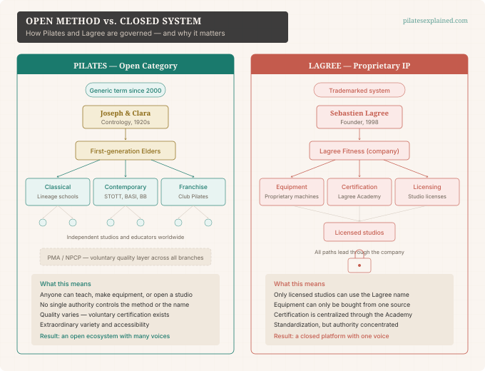

You've seen them on Instagram. Sleek, dark studios. Machines that look like oversized reformers. Slow, shaking, sweat-soaked classes with names like "Megaformer" and "Lagree." Friends tell you it's "like Pilates, but harder."
But here's the thing: Lagree is not Pilates.
That's not our opinion. That's what Lagree itself says. The company's own website states it in all caps: Lagree Fitness is NOT Pilates. Understanding why that distinction matters helps you make a more informed choice about what you're actually signing up for.
Lagree's Origin Story
Sebastien Lagree's path into fitness began in Los Angeles in 1998, when he was introduced to Pilates. According to the company's official history, Lagree began experimenting with bodybuilding techniques on Pilates reformers — combining high-intensity training principles with spring-based resistance.
He opened his first studio in 2001. The Proformer launched in 2006. The Megaformer followed in 2010. With each generation, the equipment moved further from the Pilates apparatus it was loosely inspired by, and the method crystallized around a different goal entirely.
Where Pilates — both classical and contemporary — is organized around a coherent whole-body method of posture, control, coordination, and breath-led movement, Lagree was built from the start around a different objective: muscular endurance under slow tempo and continuous tension. The spring-resistance concept was borrowed, but the purpose, the programming, the tempo, and the business model were all new.
This is an important distinction. Lagree didn't diverge from Pilates the way contemporary Pilates diverged from classical Pilates. Classical and contemporary Pilates are two branches of the same tree, sharing a common founder, a common apparatus family, and a common set of principles. Lagree is a different tree planted in nearby soil.
How Lagree Actually Works
If you walk into a Lagree class, here's what you'll experience — and how it differs from a Pilates session.
Tempo. Lagree formalizes slow, controlled repetitions with an eight-count tempo. Momentum is explicitly forbidden. In Pilates, tempo is controlled and breath-led but varies by exercise and teacher. In Lagree, the slow count is the method.
Time under tension. This is the core programming variable. Your muscles stay loaded throughout the entire movement — there's no rest at the top or bottom of a rep. The goal is sustained fatigue, not flowing movement.
Intensity. Lagree is explicitly marketed as high-intensity, low-impact. If you're expecting the measured, breath-paced experience of a Pilates session, a Lagree class will feel very different. Expect shaking, sweating, and deep muscular fatigue. The company's materials describe heart rates exceeding 145 to 150 BPM when done correctly.
Equipment. The Megaformer family is the centerpiece. These machines are larger and heavier than Pilates reformers — a Mega Pro weighs about 395 pounds and the company recommends 100 square feet of floor space per unit. Lagree is explicit that these are not reformers. They are a different machine designed for a different purpose.
Class format. Lagree was designed from the beginning for group training. Classes typically run 40 to 50 minutes with multiple participants working simultaneously. This is a significant departure from classical Pilates, which was historically taught in private or semi-private settings with strong teacher-guided progression.
What it feels like. A Lagree class feels more like a proprietary strength-endurance circuit than a movement method. The goal is muscular challenge — slow, sustained, and intense. A Pilates session, whether classical or contemporary, feels more like a coherent practice: a system of movement that works the whole body through coordination, control, and breath. Both can be challenging. But the kind of challenge is different.
The Business and IP Difference

The structural difference between Pilates and Lagree goes deeper than technique. It's a fundamentally different model of ownership and governance.
After the 2000 federal court ruling, "Pilates" became a generic term. Anyone can teach Pilates, manufacture Pilates equipment, or open a Pilates studio without licensing the name. This is why the field contains lineage schools, franchise operations, rehab studios, and everything in between — all under the same broad umbrella.
Lagree operates under the opposite model. The method is governed by private intellectual property: proprietary equipment, trademarks, centralized certification, and studio licensing. You can't teach Lagree without going through the Lagree Academy. You can't open a Lagree studio without a license. You can't buy the equipment without being part of the ecosystem.
Lagree certification flows through three tiers: Level 1 at $2,900, Level 2 courses at $290 each, and Level 3 at $4,900. A named roster of Senior Master Trainers sits at the top of the training hierarchy, all under the corporate method umbrella.
This isn't inherently good or bad — it's simply a different structure. Pilates is an open category with decentralized authority. Lagree is a closed system with centralized control. Both models have trade-offs. The open Pilates model produces extraordinary variety and accessibility, but also inconsistency in quality. The closed Lagree model produces standardization, but concentrates authority and revenue in a single entity.
The Evidence Gap
This is where the distinction matters most for an informed consumer.
Pilates has decades of scientific literature behind it. Systematic reviews have found evidence for improvements in flexibility, dynamic balance, and muscular endurance in healthy people. Later reviews found that Pilates may help with pain and function in several musculoskeletal settings, particularly low back pain, though it's not consistently shown to be superior to other forms of exercise. Recent reviews also stress that safety reporting across Pilates studies is often inadequate — so "safe" should mean "probably low risk when competently taught," not "proven harmless in all settings."
Lagree's public evidence base is much smaller. The company's own science page currently highlights two case-series studies — one involving eight healthy adults — that are uncontrolled and exploratory. This is early-stage plausibility research, not the kind of evidence that confirms broad marketing claims.
This does not mean Lagree is ineffective. It may well deliver the benefits its practitioners report. But it does mean that its marketing claims currently outrun its independent evidence base by a considerable margin. Claims like using up to 600 muscles at once, delivering anti-inflammatory effects, or being the only workout that effectively balances high intensity with low impact don't yet have peer-reviewed support behind them.
What does this mean for you? It means you should apply the same healthy skepticism to Lagree marketing that you'd apply to any fitness claim. Ask questions. Look for evidence. And know that decades of research support Pilates, while Lagree's research story is just beginning.
Now you understand all three methods — Classical Pilates, Contemporary Pilates, and Lagree. But which one should you actually try? In our final post, we help you match the right method to your goals.
Key distinction
Lagree may borrow spring-resistance language, but it is governed, taught, and marketed as a separate proprietary fitness system. That is why the site treats it as adjacent to Pilates, not as a Pilates lineage.
Free guide
Get the Pilates Starter Decision Guide
Still choosing between class styles, equipment, and studio language? The free guide turns the history into a practical first-class decision.
Powered by Kit. You can unsubscribe at any time.